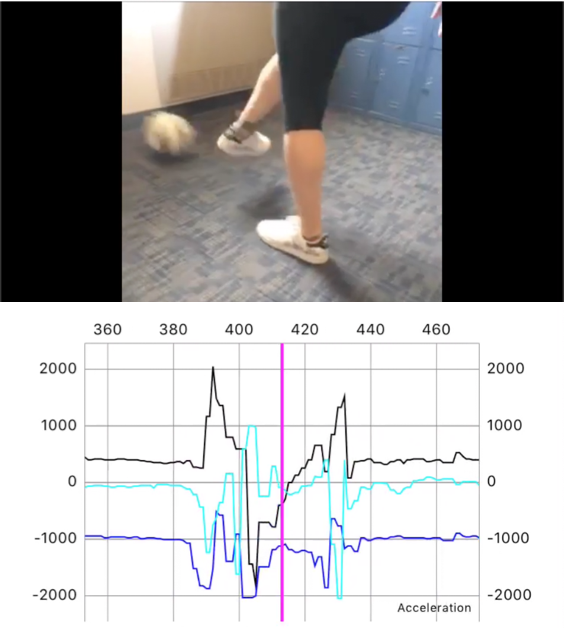

AlpacaML

(Under Construction)
Videos
</div> <div class="container-fluid bg-3 text-center"> <h3>Publications</h3><br> </div> <div class="container-fluid bg-3 text-center"> <h3>How to get AlpacaML</h3><br> </div> <div class="container-fluid bg-3 text-center"> <h3>Github</h3><br> <p>Master branch: <a href="https://github.com/LaboratoryForPlayfulComputation/AlpacaML">Master</a></p> <p>Abbie's personal fork: <a href="https://github.com/LaboratoryForPlayfulComputation/AlpacaML">Personal</a></p> </div> <footer class="container-fluid text-center"> <p>Footer Text</p> </footer> </body> </html>